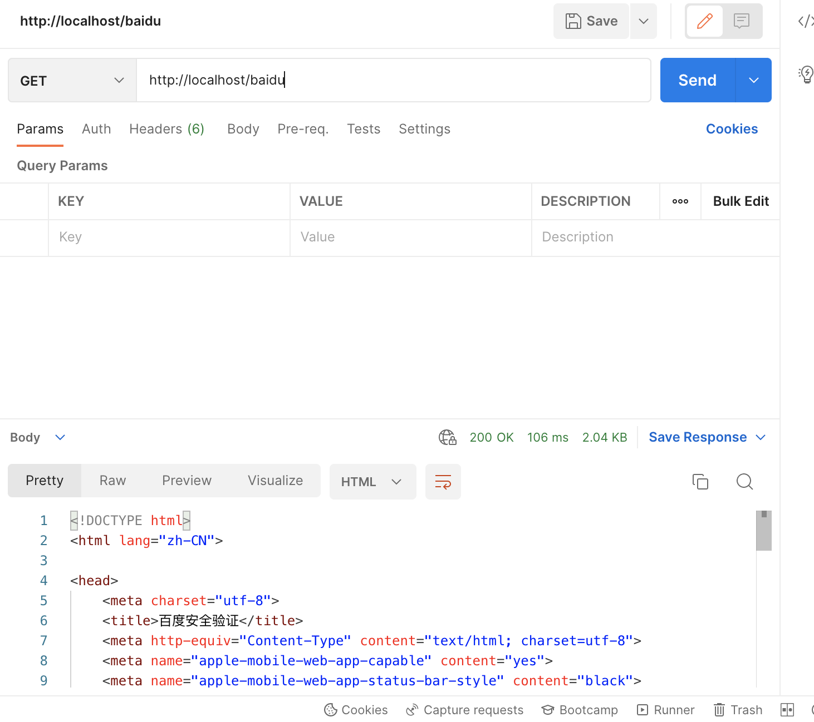

浅谈网关及其应用-上
Contents
网关概述
什么是网关
网关（Gateway）这个词我们应该都很熟悉了，它在计算机科学中，尤其是计算机网络中十分常见，主要是用来表示位于内部区域边缘，与外界进行交互的某个物理或逻辑设备，比如你家里的路由器就属于家庭内网与互联网之间的网关。
在实际使用中，通常把网关分为两类：流量网关与业务网关。
- 流量网关
流量网关,顾名思义就是控制流量进入集群的网关,有很多工作需要在这一步做,对于一个服务集群,势必有很多非法的请求或者无效的请求,这时候要将请求拒之门外,降低集群的流量压力。
定义全局性的、跟具体的后端业务应用和服务完全无关的策略网关就是上图所示的架构模型——流量网关。流量网关通常只专注于全局的Api管理策略，比如全局流量监控、日志记录、全局限流、黑白名单控制、接入请求到业务系统的负载均衡等，有点类似防火墙。Kong 就是典型的流量网关。
- 业务网关
当一个单体应用被拆分成许许多多的微服务应用后，也带来了一些问题。一些与业务非强相关的功能，比如权限控制、日志输出、数据加密、熔断限流等，每个微服务应用都需要，因此存在着大量重复的代码实现。而且由于系统的迭代、人员的更替，各个微服务中这些功能的实现细节出现了较大的差异，导致维护成本变高。另一方面，原先单体应用下非常容易做的接口管理，在服务拆分后没有了一个集中管理的地方，无法统计已存在哪些接口、接口定义是什么、运行状态如何。
网关就是为了解决上述问题。作为微服务体系中的核心基础设施，一般需要具备接口管理、协议适配、熔断限流、安全防护等功能，各种开源的网关产品（比如 zuul）都提供了优秀高可扩展性的架构、可以很方便的实现我们需要的一些功能、比如鉴权、日志监控、熔断限流等。
与流量网关相对应的就是业务网关,业务网关更靠近我们的业务,也就是与服务器应用层打交道,那么有很多应用层需要考虑的事情就可以依托业务网关,例如在线程模型、协议适配、熔断限流，服务编排等。
目前业务网关比较成熟的 API 网关框架产品有三个 分别是:Zuul1、Zuul2 和 SpringCloud Gateway
我们可以通过下图来加深对二者的认知。
这张图展示了一个多层 Gateway 架构，其中有一个总的 Gateway 接入所有的流量(流量网关)，并分发给不同的子系统，还有第二级 Gateway 用于做各个子系统的接入 Gateway(业务网关)。可以看到，网关所管理的服务力度可粗可细。通过网关，我们可以把分布式架构组织成一个星型架构，由网络对服务的请求进行路由和分发。
有时候我们也会模糊流量网关和业务网关，让一个网关承担所有的工作,所以这两者之间并没有严格的界线。
业务网关概述
什么是业务网关
网关的角色是作为一个 API 架构，用来保护、增强和控制对于 API 服务的访问。
API 网关是一个处于应用程序或服务（提供 REST API 接口服务）之前的系统，用来管理授权、访问控制和流量限制等，这样 REST API 接口服务就被 API 网关保护起来，对所有的调用者透明。因此，隐藏在 业务网关后面的业务系统就可以专注于创建和管理服务，而不用去处理这些策略性的基础设施。
通俗的说业务网关中就是做一些通用的基础设施功能。类似AOP中的横切关注点概念，把业务系统中涉及的一些通用功能（日志分析、鉴权、路由等）抽取到业务网关中统一管理。业务 网关不是一个典型的业务系统， 而是一个为了让业务系统更专注与业务服务本身，给API服务提供更多附加能力的一个中间层。
为什么需要业务网关
在微服务架构中，服务的粒度被进一步细分，各个业务服务可以被独立的设计、开发、测试、部署和管理。各个独立部署单元可以用不同的开发测试团队维护，可以使用不同的编程语言和技术平台进行设计，这就要求必须使用一种语言和平台无关的服务协议作为各个单元间的通讯方式。
业务网关作为分散在各个业务系统微服务的 API 聚合点和统一接入点，外部请求通过访问这个接入点，即可访问内部所有的 REST API 服务。
业务网关的职能
- 请求接入
作为所有 API 接口服务请求的接入点，管理所有的接入请求
- 业务聚合
作为所有后端业务服务的聚合点，所有的业务服务都可以在这里被调用
- 中介策略
实现安全、验证、路由、过滤、流控，缓存等策略，进行一些必要的中介处理
- 统一管理
提供配置管理工具，对所有 API 服务的调用生命周期和相应的中介策略进行统一管理。
开源网关介绍
目前常见的开源网关大致上按照语言分类有如下几类：
- Nginx+lua
Open Resty、Kong、Orange、Abtesting gateway
- Go
Janus、fagongzi、Grpc-gateway
- Java
Zuul/Zuul2、Spring Cloud Gateway、Kaazing KWG、gravitee、Dromara soul 等
- NodeJS
Express Gateway、Micro Gateway
按照使用数量、成熟度等来划分，主流的有 4 个：
OpenResty 、Kong、 Zuul/Zuul2、 Spring Cloud Gateway
Zuul/Zuul2
项目地址：github.com/Netflix/zuul
Zuul 是 Netflix 开源的 API 网关系统，它的主要设计目标是动态路由、监控、弹性和安全。
Zuul 的内部原理可以简单看做是很多不同功能 filter 的集合。Zuul 1.x 基于同步 IO，也是 Spring Cloud 全家桶的一部分，可以方便的配合 Spring Boot/Spring Cloud 配置和使用。
Spring Cloud Gateway
项目地址： github.com/spring-cloud/spring-cloud-gateway/
Spring Cloud Gateway 基于 Java 8、Spring 5.0、Spring Boot 2.0、Project Reactor，发展的比 Zuul 2 要早，目前也是 Spring Cloud 全家桶的一部分。
Spring Cloud Gateway 可以看做是一个 Zuul 1.x 的升级版和代替品，比 Zuul 2 更早的使用 Netty 实现异步 IO，从而实现了一个简单、比 Zuul 1.x 更高效的、与 Spring Cloud 紧密配合的 API 网关。
Spring cloud Gateway 的几个核心概念：
- 路由
网关最基础的部分，路由信息由一个ID、一个目的URL、一组断言和一组Filter组成。当断言为真，则说明请求的URL和配置匹配。
- 断言
作为路由的匹配条件
- 过滤器
过滤器Fliter 会对请求和响应进行修改处理
Spring Cloud Gateway 介绍及使用案例
Spring Cloud Gateway
- Spring Cloud Gateway 是由 WebFlux + Netty + Reactor 实现的响应式的 API 网关。
- Spring Cloud Gateway 不能在传统的 servlet 容器中工作，也不能构建成 war 包！
- Spring Cloud Gateway 为微服务架构提供一种简单且有效的 API 路由的管理方式，并基于 Filter 的方式提供网关的基本功能，例如说安全认证、监控、限流等等
注意：Spring Cloud Gateway会和spring-webmvc的依赖冲突，需要排除spring-webmvc
Spring Cloud Gateway核心概念
路由（route)
路由是网关中最基础的部分，路由信息包括一个ID、一个目的URI、一组断言工厂、一组Filter组成。如果断言为真，则说明请求的URL和配置的路由匹配。
断言(predicates)
Java8中的断言函数，SpringCloud Gateway中的断言函数类型是Spring5.0框架中的ServerWebExchange。断言函数允许开发者去定义匹配Http request中的任何信息，比如请求头和参数等。
过滤器（Filter)
SpringCloud Gateway中的filter分为Gateway FilIer和Global Filter。Filter可以对请求和响应进行处理。
Spring Cloud Gateway如何工作
使用案例介绍
我们在本地模拟一个简单的网关使用场景：通过网关查询 微服务【订单服务】的一个接口。业务架构大致如下图所示：
需要部署三个服务在本地，分别是：
- eureka负载均衡器[eureka]
- 网关[gateway]
- 微服务[zhenyu-order]
| 序号 | 服务名称 | 端口号 | 备注 |
|---|---|---|---|
| 1 | eurka-server | 8761 | eureka服务 |
| 2 | service-gateway | 80 | 网关服务 |
| 3 | zhenyu-order | 8081 | 微服务-订单 |
首先，我们搭建一个Eureka 服务，作为服务注册与发现的负载均衡器。 其次，分别在本地启动网关服务于微服务应用，启动完毕后，可以在eureka页面发现当前应用如下：
网关的配置路由规则如下：
|
|
在微服务【zhenyu-order】应用中，增加一个接口，实现如下：
|
|
重新部署服务后，访问网关地址：
http://localhost/zhenyu-order/queryOrder?orderNo=ABC
访问结果如下图所示：
Spring Cloud Gateway 窥探技术原理
路由
在上面的示例中，我们看到一组路由有以下几个组成部分：
- ID、目标URI
- 一系列的断言【Predicate】
- 过滤器【Filters】

web 请求，通过一些匹配条件，定位到真正的服务节点，并在这个转发过程的前后，进行一些精细化控制
predicate 就是我们的匹配条件
filter：就可以理解为一个无所不能的拦截器，有了这两个元素，再加上目标的uri，就可以实现一个具体的路由了。
Predicate 断言条件(转发规则)介绍
Predicate 来源于 Java 8，是 Java 8 中引入的一个函数，Predicate 接受一个输入参数，返回一个布尔值结果。该接口包含多种默认方法来将 Predicate 组合成其他复杂的逻辑（比如：与，或，非）。可以用于接口请求参数校验、判断新老数据是否有变化需要进行更新操作。
在 Spring Cloud Gateway 中 Spring 利用 Predicate 的特性实现了各种路由匹配规则，有通过 Header、请求参数等不同的条件来进行作为条件匹配到对应的路由。网上有一张图总结了 Spring Cloud 内置的几种 Predicate 的实现。
从官方文档来看，Spring Cloud GateWay 内置了11种断言方式，具体可见下方链接。
我们从中选取几种作为示例
通过请求参数匹配
配置如下：
|
|
验证结果如图所示
通过请求路径匹配匹配
配置如下：
|
|
验证结果如图所示

过滤器 GlobalFilter vs GatewayFilter
在Spring Cloud Gateway 网关中，大量的使用Fliters，主要做一些过滤、拦截、校验、转发、日志等工作。
Global Filters：全局过滤器，不需要配置路由，系统初始化作用到所有路由上。
GatewayFilter：需要配置某个路由，才能过滤。如果需要使用全局路由，需要配置Default Filters。
GlobalFilter
GlobalFilter 接口和 GatewayFilter 有一样的接口定义，只不过， GlobalFilter 会作用于所有路由。
官方定义的GlobalFilter接口如图所示，只需要去实现fliter方法即可。
单独定义只需要实现GlobalFilter, Ordered这两个接口就可以了。
|
|
查看运行效果如下：
GatewayFilter
不同于GlobalFilter，GatewayFilter更像是局部过滤器，Spring定义了31种实现，详情可见官方文档
官方定义的GatewayFilter接口如图所示，只需要去实现fliter方法即可。
我们选取一个常用的 The StripPrefix GatewayFilter 作为示例，配置文件如下：
|
|
当形如/name/blue/red的url的请求访问网关的时候，网关访问微服务的请求url 如：nameservice/red，这种过滤器常用来根据url来区分微服务，以求把正确的请求路由到对应的微服务，保障请求可用。
Spring Cloud Gateway限流
常见的限流处理方式
在系统中设计限流方案时，有一个问题值得设计者去仔细考虑，当请求者被限流规则拦截之后，我们该如何返回结果。一般我们有下面三种限流的处理方式：
- 拒绝服务
- 排队等待
- 服务降级
最简单的做法是拒绝服务，直接抛出异常，返回错误信息（比如返回 HTTP 状态码 429 Too Many Requests），或者给前端返回 302 重定向到一个错误页面，提示用户资源没有了或稍后再试。但是对于一些比较重要的接口不能直接拒绝，比如秒杀、下单等接口，我们既不希望用户请求太快，也不希望请求失败，这种情况一般会将请求放到一个消息队列中排队等待，消息队列可以起到削峰和限流的作用。第三种处理方式是服务降级，当触发限流条件时，直接返回兜底数据，比如查询商品库存的接口，可以默认返回有货。
网关作为整个分布式系统的入口，承担了所有的用户请求，所以在网关中进行限流是最合适不过的。网关层限流有时也被称为 接入层限流。
常见的限流算法
固定窗口算法（Fixed Window）
固定窗口算法又叫计数器算法，是一种简单方便的限流算法。主要通过一个支持原子操作的计数器来累计 1 秒内的请求次数，当 1 秒内计数达到限流阈值时触发拒绝策略。每过 1 秒，计数器重置为 0 开始重新计数。
但是此算法存在一个缺陷：
假设设置限流为每秒2个访问2次，但是当遇到时间窗口的临界突变时，如 1s 中的后 500 ms 和第 2s 的前 500ms 时，虽然是加起来是 1s 时间，却可以被请求 4 次。
滑动窗口算法（Rolling Window 或 Sliding Window）
我们已经知道固定窗口算法的实现方式以及它所存在的问题，而滑动窗口算法是对固定窗口算法的改进。既然固定窗口算法在遇到时间窗口的临界突变时会有问题，那么我们在遇到下一个时间窗口前也调整时间窗口不就可以了吗？
下面是滑动窗口的示意图。
但是，只要有时间窗口的存在，还是有可能发生时间窗口的临界突变问题。
漏桶算法（Leaky Bucket）
漏桶算法中的漏桶是一个形象的比喻，这里可以用生产者消费者模式进行说明，请求是一个生产者，每一个请求都如一滴水，请求到来后放到一个队列（漏桶）中，而桶底有一个孔，不断的漏出水滴，就如消费者不断的在消费队列中的内容，消费的速率（漏出的速度）等于限流阈值。即假如 QPS 为 2，则每 1s / 2= 500ms 消费一次。漏桶的桶有大小，就如队列的容量，当请求堆积超过指定容量时，会触发拒绝策略。

令牌桶算法（Token Bucket）
令牌桶算法同样是实现限流是一种常见的思路，最为常用的 Google 的 Java 开发工具包 Guava 中的限流工具类 RateLimiter 就是令牌桶的一个实现。令牌桶的实现思路类似于生产者和消费之间的关系。
系统服务作为生产者，按照指定频率向桶（容器）中添加令牌，如 QPS 为 2，每 500ms 向桶中添加一个令牌，如果桶中令牌数量达到阈值，则不再添加。
请求执行作为消费者，每个请求都需要去桶中拿取一个令牌，取到令牌则继续执行；如果桶中无令牌可取，就触发拒绝策略，可以是超时等待，也可以是直接拒绝本次请求，由此达到限流目的。
下面是令牌桶限流算法示意图。
Spring Cloud Gateway 限流实现方式
官方实现的限流过滤器
spring cloud gateway里面也提供了一个自实现的限流过滤器
org.springframework.cloud.gateway.filter.factory.RequestRateLimiterGatewayFilterFactory
通过 RequestRateLimiterGatewayFilterFactory ，可以创建一个GatewayFilter的匿名内部类实例，它的内部使用Redis实现限流。限流规则由KeyResolver接口的具体实现类来决定，比如通过IP、url等来进行限流。 参考官方文档示例
自定义限流过滤器
基于GlobalFilter，可以很容易的编写一个全局过滤器来进行限流
现提供一个基于 Guava的 RateLimiter实现的自定义限流过滤器
|
|
Author 超级阵雨
LastMod 2022-08-13